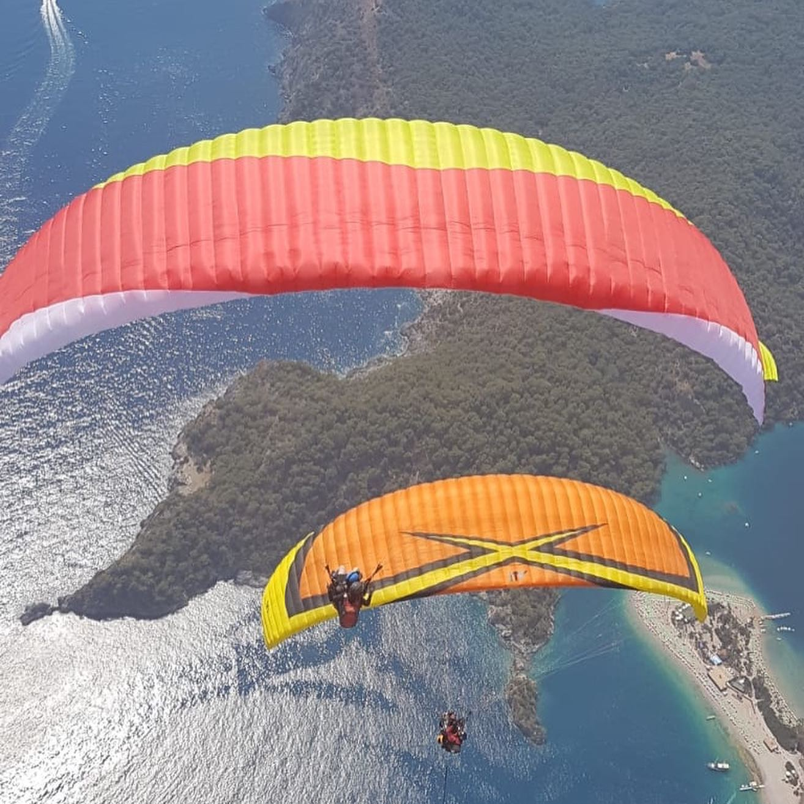
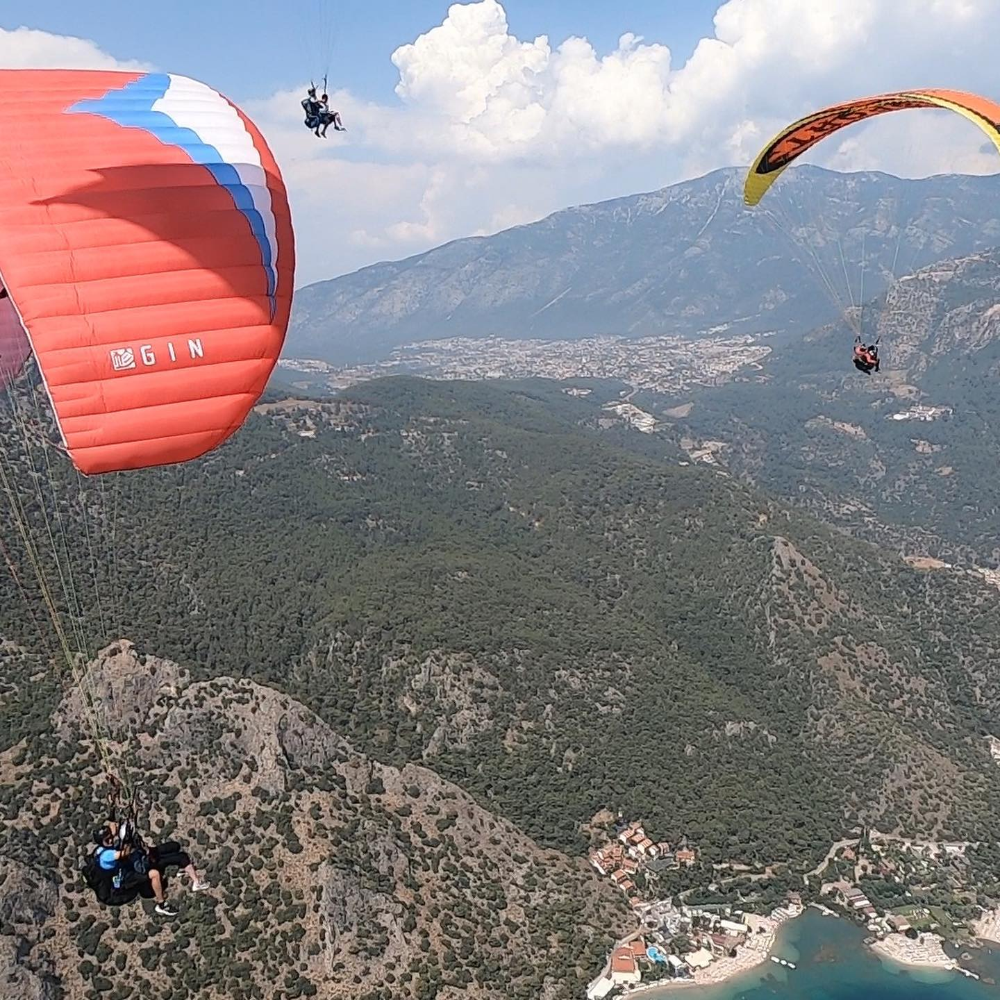
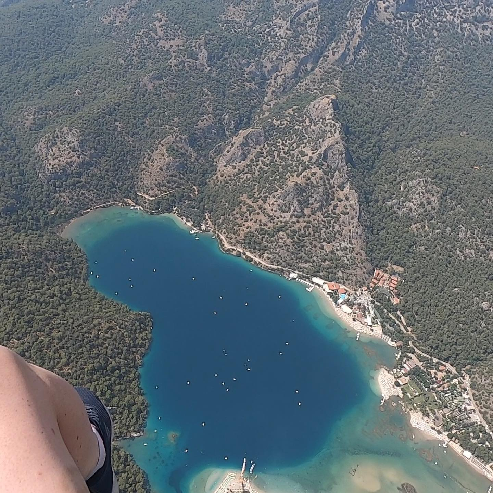
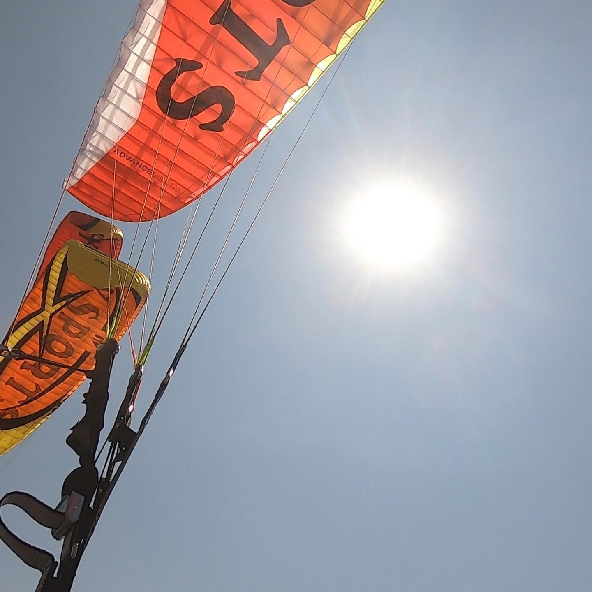
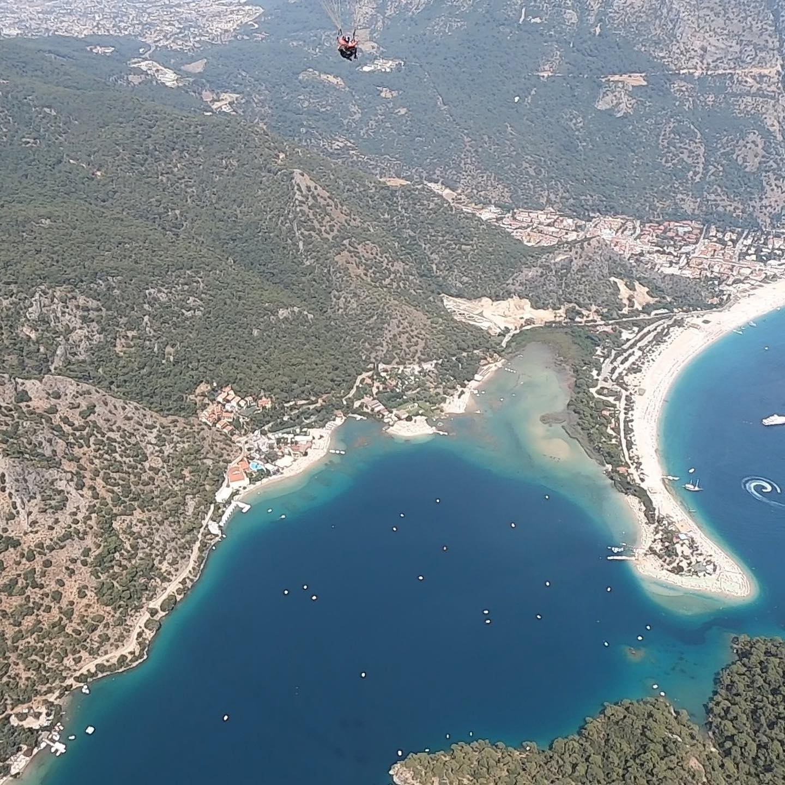

August 22, 2019
Geographic diversity galore. Mushroom-capped fairy chimneys and cities carved in stone. Dwelling in a cave and rising before the sun. Turkey just being downright outstanding.
And soaring the skies of Fethiye
"Run off a cliff? Sure thing! Lessgooooo!!"
Soaring way high above the stunning landscapes of Oludeniz was a thrilling time. The crystal-clear waters, sandy beaches and unrivaled views of Badabag Mountains were admired from my comfortable seat in the tranquil air nearly two thousand meters above sea level.
My pilot tested my bravery and added some skillful acrobatics to the excursion.
Scroll through for some shots from the sky >>>





« Previous
Next »